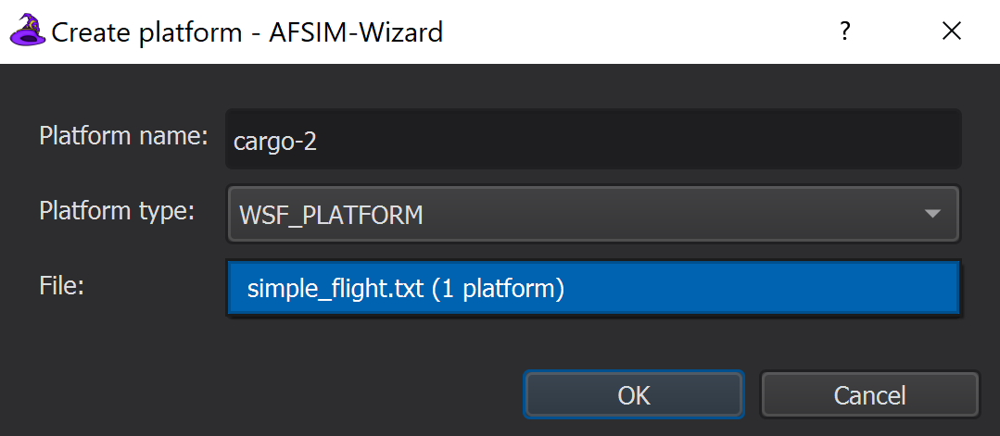
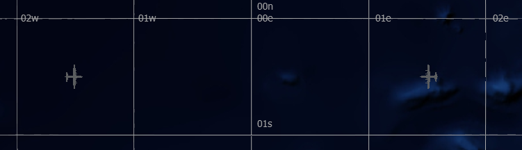

Platforms and Platform Types¶
AFSIM Simulation entities, such as vehicles and structures, are created when Platforms are defined in the scenario being simulated.
AFSIM is an object framework for creating simulations, and a Platform encapsulates the principle identity, or definition of an object.
Platforms may have Systems (or platform parts), Information & Attributes, and processors to automate control of their actions.
The following are some component types that may appear on a given platform:
Mover – Defines how a platform moves
Sensor – Defines how a platform will sense other platforms in it’s environment
Comm – Defines how a platform communicates with other platforms
Processor – Defines the decision making and action of a platform
Quick Start¶
A given platform must inherit a single platform type, the default platform type being WSF_PLATFORM. Platform types are valuable for encapsulating information and platform parts that are common to multiple platforms. This prevents duplicate code and allows uniform changes to be made to multiple platforms quickly and without error.
The following examples result in the same output, However, the second example implements a platform type block to avoid code duplication.
Without Platform Type |
With Platform Type |
platform cargo-1 WSF_PLATFORM
icon c130
spatial_domain air
category cargo
position 00:30s 01:30w altitude 8000 m
heading 90 deg
end_platform
platform cargo-2 WSF_PLATFORM
icon c130
spatial_domain air
category cargo
position 00:30s 01:30e altitude 8000 m
heading -90 deg
end_platform
|
platform_type CARGO_AIRCRAFT WSF_PLATFORM
icon c130
spatial_domain air
category cargo
end_platform_type
platform cargo-1 CARGO_AIRCRAFT
position 00:30s 01:30w altitude 8000 m
heading 90 deg
end_platform
platform cargo-2 CARGO_AIRCRAFT
position 00:30s 01:30e altitude 8000 m
heading -90 deg
end_platform
|
Wile in this simple case the number of code lines is the same, additional CARGO_AIRCRAFT platforms may now be created quickly and easily using the code in the second example. Now, the CARGO_AIRCRAFT platform type option may be used to create platforms directly in scenario files, through the Wizard Map Display, dynamically in Warlock, and in script.
Closer Look¶
Note
The following steps assume that the “simple_flight” scenario is present as discussed in Scenarios and Projects.
Platform Definitions¶
Platforms may be added to a scenario using a Wizard Text Editor to directly modify scenario files, or through Wizard’s Map Display.
Complete the steps below to add aircraft platforms to the simple_flight scenario:
Add the following platform command block to simple_flight.txt using the Wizard Text Editor.
platform cargo-1 WSF_PLATFORM icon c130 spatial_domain air category cargo position 00:30s 01:30w altitude 8000 m heading 90 deg end_platformSave the file.
Navigate to the Map Display (Use the Wizard View Menu to open the Map Display if it is not already visible.)
If necessary, adjust the map display to show the newly added platform.
Place the cursor on the map near the coordinates 00:30s 01:30e then Right-Click > Add at Location > Platform.
In the Create Platform prompt, name the platform “cargo-2” and select WSF_PLATFORM from the Platform Type drop-down menu, then click OK.
Note
When a platform is created in the Map Display, a platform definition block automatically appears in the accompanying scenario file, which may then be edited.
Notice that “cargo-2” does not appear with an icon by default, having only a position defined in it’s definition.
Add/modify information to/in this block to make it match the following platform definition block and save the file.
platform cargo-2 WSF_PLATFORM icon c130 spatial_domain air category cargo position 00:30s 01:30e altitude 8000 m heading -90 deg end_platform
{kind=link}
Wizard’s Map Display should reflect the following:
Platform Types¶
As platform definitions become increasingly complex, it becomes more important to abstract common platform elements away from the platform itself, and into a parent platform type.
Each of “cargo-1” and “cargo-2” duplicate several elements. While this problem may appear trivial for the example, elements to be discussed in subsequent topics each increase the complexity of the platform, making each platform more difficult to maintain if platform types are not utilized.
Complete the following steps to abstract common platform attributes into a shared platform type.
Add the following platform_type command block to simple_flight.txt before the existing platform definitions:
platform_type CARGO_AIRCRAFT WSF_PLATFORM icon c130 spatial_domain air category cargo end_platform_typeReplace WSF_PLATFORM with CARGO_AIRCRAFT in each of the respective platform definitions and save the file.
Notice that prior to replacing the parent type in step 2, the map display did not show the platforms as desired, but updated automatically after step 2.
Review¶
After completing this module, the simple_flight project should include a single scenario file, simple_flight.txt that reflects the following:
# simple_flight demo
simulation_name "Simple Flight"
execute at_time 0.1 sec absolute
writeln("\nSimulating simple_flight scenario...");
end_execute
end_time 30 min
platform_type CARGO_AIRCRAFT WSF_PLATFORM
icon c130
spatial_domain air
category cargo
end_platform_type
platform cargo-1 CARGO_AIRCRAFT
position 00:30s 01:30w altitude 8000 m
heading 90 deg
end_platform
platform cargo-2 CARGO_AIRCRAFT
position 00:30s 01:30e altitude 8000 m
heading -90 deg
end_platform
Summary¶
Platform types are powerful and necessary to provide the scalability required to support large simulations. Platform types can inherit from other existing platform types, allowing for inheritance chains or “grandparent types”. Each platform or platform type must only inherit directly from a single parent.
Platforms may be created from the Map Display or a scenario file, and platform’s created via the Map Display may be created with any predefined parent types already existing in the scenario.
Generally speaking, platform parts and attributes common to multiple similar platforms should be maintained in a common platform type. Often platform type definitions are maintained in a file dedicated exclusively to said type, to improve project and scenario organization.
Alternatively, platform definitions should include only the information unique to a given platform instance, such as its name, team, route, and its initial position and kinematic state.
Mastering use of platform types early will dramatically reduce the time required to build large scenarios, and significantly reduce occurrences of difficult-to-find simulation problems.